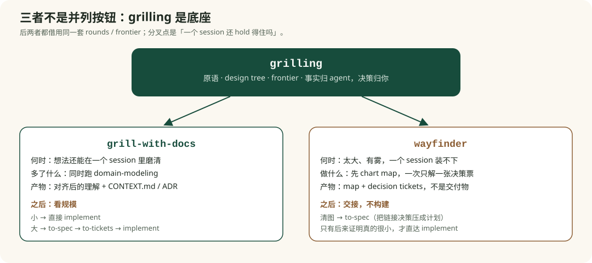

design tree
`grilling` 先把问题看成一棵决策树，而不是立刻给方案。重点是“有哪些决定彼此依赖”。
Lesson 0003
这一课不把 `grill-with-docs` 当成孤立 skill 来讲，而是和 `grilling`、`wayfinder` 一起比较。因为真正容易混淆的，不是它们各自做什么，而是它们共享了哪层底座、在什么分叉点开始变成不同工具。
`grilling` 是原语，`grill-with-docs` 是带文档沉淀的入口，`wayfinder` 是面向巨大模糊项目的路线规划流。
所以它们不是三个平级的按钮。更准确地说，后两者都借用了 `grilling`，只是把它放到了不同上下文里：一个放进工作目录文档里，一个放进 issue map 里。

`grilling` 先把问题看成一棵决策树，而不是立刻给方案。重点是“有哪些决定彼此依赖”。
每一轮只问现在就能问的问题，不跨过尚未解决的前置条件。这是三者共同的节奏感来源。
环境事实由 agent 去查，真正的取舍才交给用户。这条在 `grilling` 本身里就写得很清楚。
这意味着：如果你在任何一个上层 flow 里感受到“它在一轮轮把问题掰开问”，那其实是在感受 `grilling`。
共同底座 · 访谈原语全文
原文：grilling/SKILL.md · grill-with-docs、wayfinder、triage 内部跑的都是这一套。
--- name: grilling description: 围绕一个计划、决策或想法持续追问，强力帮用户做压力测试。适用于用户想严密审视自己的思路，或明确使用任何 “grill” 类触发词时。 --- 持续访谈用户，直到你们达到共享理解。把讨论映射成一棵 **design tree**：每个决策都会分叉出挂在它下面的后续决策。 按 **rounds** 推进这棵树。**frontier** 是所有前置条件已经满足的决策 —— 你现在就能问、而不需要猜测尚未听到的答案的那些问题。每一轮要把整个 frontier 一次问完：给每个问题编号，并写出你的推荐答案。然后等待用户回答，再进入下一轮。 每个问题的格式如下： ``` ❓ **Q1** - **<question title>**: <question body, might be multiple paragraphs, including multiple choices> ➡️ <your recommended answer> ``` 用户在每一轮的回答都会重塑这棵树 —— 已经定下来的决策把 frontier 向外推，并解锁依赖它们的问题。重新计算 frontier，再问下一轮。若一个问题的答案依赖于本轮中另一个尚未解决的问题，那么它属于 *更后面的一轮*，不是这一轮。 查找 *事实* 是你的工作，不是用户的工作。当 frontier 中的问题需要环境事实（文件系统、工具等）时，派一个 sub-agent 去查 —— 不要让用户回答你本可以自己查到的事。也不要因此卡住：正在进行中的探索仍然算未解决的前置条件，因此只有它下游的问题需要等待 sub-agent 回报 —— frontier 里其余问题现在就问。真正的 *决策* 归用户 —— 把每个决策交给用户，并等待。 当 frontier 为空时，这个会话才算结束：设计树的每一条分支都被走过，不再有任何被默默假定的内容。在用户确认你们已经达成共享理解之前，不要开始执行。
`ask-matt` 直接说了：只要你在工作目录里，默认从 `grill-with-docs` 起步，而不是 `grill-me`。原因是它能留下纸面痕迹。
`grill-with-docs` 的定义非常短：运行 `grilling`，同时使用 `domain-modeling`。所以它多出来的不只是“写文档”，而是主动维护 glossary / ADR 的 discipline。
它适合你还能在一个 session 里把主要问题 hold 住的时候。它负责 sharpen，不负责给巨大迷雾先找地图。
所以今天的 `grill-with-docs` 更像：在一个 repo 里，把一个还不够清楚但范围可控的想法磨清楚，并顺手沉淀语言和关键决策。
工作目录默认起点 · 它到底多了哪一层
原文：grill-with-docs/SKILL.md · 正文只有一句。它多出来的纪律全在下一份 domain-modeling。
--- name: grill-with-docs description: 用不停歇的访谈把计划或设计磨清楚，同时边走边写文档（ADR 和 glossary）。 disable-model-invocation: true --- 跑一场 `/grilling` session，同时使用 `/domain-modeling` skill。
原文：domain-modeling/SKILL.md · grill-with-docs 那一句“同时使用”指的就是这份主动纪律：改 glossary / ADR，而不只是读它们。
--- name: domain-modeling description: 建立并磨利项目的领域模型。适用于用户要钉住领域术语或 ubiquitous language、记录架构决策，或其他 skill 需要维护领域模型时。 --- # Domain Modeling 在设计过程中主动建立并磨利项目的领域模型。这是 *主动* 纪律 —— 挑战用词、发明边界场景，术语和决策一结晶就写下来。（仅仅 *读* `CONTEXT.md` 来对齐词汇不是这个 skill —— 那是任何 skill 都能做的一行习惯。本 skill 是你在改模型，而不只是消费它。） ## 文件结构 大多数仓库只有一个 context： ``` / ├── CONTEXT.md ├── docs/ │ └── adr/ │ ├── 0001-event-sourced-orders.md │ └── 0002-postgres-for-write-model.md └── src/ ``` 如果根上存在 `CONTEXT-MAP.md`，仓库有多个 context。地图指向每一个住在哪： ``` / ├── CONTEXT-MAP.md ├── docs/ │ └── adr/ ← 系统级决策 ├── src/ │ ├── ordering/ │ │ ├── CONTEXT.md │ │ └── docs/adr/ ← 该 context 的决策 │ └── billing/ │ ├── CONTEXT.md │ └── docs/adr/ ``` 文件惰性创建 —— 只有真有东西要写才建。若还没有 `CONTEXT.md`，第一个术语敲定时再建。若还没有 `docs/adr/`，第一份 ADR 需要时再建。 ## 在 session 里 ### 对照 glossary 提出挑战 用户用的词和 `CONTEXT.md` 里已有语言冲突时，立刻喊出来。“你的 glossary 把 ‘cancellation’ 定义成 X，但你现在好像在说 Y —— 到底是哪一个？” ### 磨利模糊语言 用户用了含糊或身兼多职的词时，提出一个精确的规范用词。“你说 ‘account’ —— 是指 Customer 还是 User？这是两件事。” ### 讨论具体场景 在谈领域关系时，用具体场景做压力测试。发明能探测边界的场景，逼用户把概念之间的边界说清楚。 ### 和代码交叉核对 用户陈述某事如何运作时，核对代码是否同意。发现矛盾就摊开：“你的代码取消的是整张 Order，但你刚才说可以部分取消 —— 哪个对？” ### 当场更新 CONTEXT.md 术语一敲定，立刻更新 `CONTEXT.md`。不要攒着批量写。格式见 [CONTEXT-FORMAT.md](./CONTEXT-FORMAT.md)。 `CONTEXT.md` 必须完全没有实现细节。不要把它当 spec、草稿纸、或实现决策仓库。它是 glossary，除此之外什么都不是。 ### 吝啬地提供 ADR 只有下面三条同时成立时，才提议写 ADR： 1. **难逆转** — 以后改主意的成本是真的 2. **没有上下文会让人吃惊** — 未来读者会问“他们为什么这样做？” 3. **来自真实权衡** — 有过真正的备选，并且你为了具体理由选了其中一个 三条缺任何一条，就跳过 ADR。格式见 [ADR-FORMAT.md](./ADR-FORMAT.md)。
| 判断点 | 更像 grill-with-docs | 更像 wayfinder |
|---|---|---|
| 问题规模 | 一个 session 还能 hold | 大到一个 session 装不下 |
| 当前任务 | 把想法磨清楚 | 先把路线找清楚 |
| 主要产物 | 对齐后的理解 + glossary / ADR | map + decision tickets + fog 的边界 |
| 节奏 | 围绕当前想法连续澄清 | 先 chart，再一次只解一个 decision ticket |
`wayfinder` 文档写得很明确：它是给“too big for one session, wrapped in fog”的工作用的，默认产出 decisions，不直接产出 deliverables。这一点和 `grill-with-docs` 是本质分叉。对照时以下面全文为准；ask-matt 里“地图清楚后交到 to-spec” 的那一段已经嵌在 0002。
大而有雾 · 规划流全文
原文：wayfinder/SKILL.md · 本课要的是边界：plan don't do、fog、一 session 一张票、清图后交接。地图模板和票类型也在这里，复习不必再翻上游。
--- name: wayfinder description: 把一块大到一个 agent session 装不下的工作，规划成 issue tracker 上的一张共享决策票地图，一次解一张，直到通往目的地的路清楚。 disable-model-invocation: true --- 一个松散的想法到了 —— 一个 agent session 装不下，又裹在雾里：从这里到 **destination** 的路还看不见。Wayfinding 是在找那条路，不是朝目的地冲。这个 skill 把路画成仓库 issue tracker 上的一张 **共享地图**，然后处理它的 **decision tickets** —— 解完是一个决策，不是要去执行的构建切片 —— 一次一张，直到路线清楚。 目的地随这次努力而变，给它命名是画图的第一件事 —— 它塑造每一张票。它可能是一份要交接再迭代的 spec、一个规划开始前必须锁住的决策，或一次就地完成的改动（比如数据结构迁移）。这张地图与领域无关 —— 工程工作、课程内容，凡形状合适都可以。 ## 规划，不要去做 Wayfinder 默认是 **规划**：每张票解开一个决策，当地图完成时路已经清楚 —— 在有人去做那件事之前，没有剩下要决定的了。那种“干脆把活干了”的拉力，通常表示你已经走到地图边缘，该交接了。一次努力可以在它的 **Notes** 里覆盖这条，把执行带进地图本身 —— 但若没有这样写，就产出决策，不要产出交付物。 ## 用名字指称 每张地图和每张票都是 issue，所以都有一个 **名字** —— 它的标题。人要读的一切里 —— 叙述、地图的 Decisions-so-far —— 用那个名字指它，绝不要用光秃秃的 id、编号或 slug。一墙 `#42, #43, #44` 没法读；名字一眼能懂。id 和 URL 并不消失 —— 名字把链接包在里面 —— 但它们骑在名字 *里面*，从不代替名字。 ## 地图 地图是本仓库 issue tracker 上的一条 issue，打上 `wayfinder:map` —— 这是权威产物。它的票是地图的 child issues。 地图是 **索引**，不是仓库。它列出已做的决策，并指向保存细节的票；一个决策只住在一个地方 —— 它的票 —— 所以地图从不复述，只写 gist 再链接。 **地图、子票、blocking 和 frontier 查询实际住在哪，取决于 tracker。** 你应该已经拿到 issue tracker —— 若没有，跑 `/setup-matt-pocock-skills`。查阅 tracker 文档的 “Wayfinding operations” 一节，看 *这个* 仓库怎么表达它们。若还没有提供 tracker，默认用本地 markdown tracker。 ### 地图正文 整张地图的低分辨率视图，每个 session 加载一次。未关闭的票 **不列在这里** —— 它们是未关闭的 child issues，靠查询找到。 ```markdown ## Destination <走到这张地图尽头长什么样 —— 这次努力要找到的 spec、决策或改动。一两行；每个 session 选票之前都朝它定向。> ## Notes <领域；每个 session 都该查阅的 skills；这次努力的长期偏好> ## Decisions so far <!-- 索引 —— 已关闭的票一行一条：够判断相不相关，再点进链接看票里的细节 --> - [<closed ticket title>](link) — <答案的一行 gist> ## Not yet specified <!-- 见 “Fog of war”：范围内、但还开不成票的雾；frontier 前进时毕业 --> ## Out of scope <!-- 见 “Out of scope”：被裁定超出目的地的工作；关闭，永不毕业 --> ``` ### 票 每张票是地图的一条 **child issue**；tracker 的 issue id 就是它的身份。正文是那个问题，大小按一个 100K token 的 agent session 来： ```markdown ## Question <这张票要解开的决策或调查> ``` 每张票带一个 `wayfinder:<type>` 标签 —— `research`、`prototype`、`grilling`、`task` 之一（见 Ticket Types）。 一个 session **认领** 一张票的方式是：先把它 assign 给正在开这张地图的人，**任何工作之前**，这样并发 session 会跳过它。那个 assignee *就是* claim：一张未关闭、未 assign 的票就是未被认领的。 Blocking 使用 tracker 的 **原生** 依赖关系 —— 这很关键，因为它在 tracker 自己的 UI 里把 frontier *画出来*，人不用打开地图就能看见什么可拿。只有缺少原生 blocking 的 tracker 才退回正文约定。一张票在所有 blocking 它的票都关闭时 **unblocked**；**frontier** 是未关闭、未阻塞、未认领的 children —— 已知的边缘。 答案不是正文的一部分 —— 它在解决时记录（见 Work through the map）。解票过程中产生的资产从 issue 链接出去，不要贴进正文。 ## Ticket Types 每张票要么是 **HITL** —— 人在环里，和那个为自己说话的人一起做 —— 要么是 **AFK**，由 agent 独自驱动。HITL 票只有通过那场现场交换才能解开；agent 永远不能代替人的那一侧（一个自己回答自己问题的 grilling agent 已经破坏了这条）。 - **Research**（AFK）：读文档、第三方 API、或知识库这类本地资源，浮出一个决策在等的事实。由 `/research` **subagent** 解开。当前工作目录之外需要知识时用。 - **Prototype**（HITL）：用便宜、粗糙、具体的产物把讨论保真度抬高 —— 大纲、粗稿、桩，或经 /prototype skill 写出的 UI/逻辑代码。把原型当资产链上。关键问题是“它该长什么样”或“它该怎么表现”时用。 - **Grilling**（HITL）：对话。默认情况。总是调用 /grilling 和 /domain-modeling skills。 - **Task**（HITL 或 AFK）：必须先发生、一个 *决策* 才能做的手工活 —— 没什么要决定、原型或研究，但讨论被挡住直到它做完。注册一个服务才能评价它的 API、开通访问、挪数据才能看见它的形状。这是唯一 *去做* 而不是去决定的类型 —— 它挣到位置是因为解开一个决策，不是因为交付目的地。agent 能独自做就独自做（AFK）；否则给人一份精确清单（HITL）。活做完就算解开；答案记录做了什么，以及后面的票依赖的事实（凭证位置、新 URL、行数）。 ## Fog of war 地图 *故意* 不完整：看不见的就不要画。活票之外是 **战争迷雾** —— 你能感到正在过来、但还钉不住的决策和调查，因为它们挂在仍未解开的问题上。解开一张票会清掉它前面的雾，把现在能说清的东西毕业成新票 —— 一次一张，直到通往目的地的路清楚、不再剩票。 地图的 **Not yet specified** 一节写下那个模糊视图：怀疑中的问题、以后要回去的区域。这是朝向目的地的未发现 frontier —— 这里的一切都在范围内，只是还不够锋利，开不成票。能写多松就多松、能写多满就多满；它也给协作者指路，这次努力朝哪走。 **雾还是票？** 检验标准是你现在能否把问题说精确 —— *不是* 你现在能否回答它。 - **已经锋利就开票** —— 哪怕它被挡住、你现在还动不了。 - **还说不了那么锋利，就放进 Not yet specified。** 不要预先把雾切成票那么大的块：它比票更粗，frontier 走到时，一块雾可能毕业成好几张票，或一张都没有。 **Not yet specified** 排除已经决定的（Decisions so far）、已经是活票的，以及超出范围的（下一节）。 ## Out of scope 雾永远只朝 **目的地** 聚集。目的地钉住范围，所以超出它的工作是 **out of scope** —— 那不是雾，也不属于 **Not yet specified**。它在地图上有自己的 **Out of scope** 一节：你有意识地从 *这次* 努力里划出去的工作。把它放在这里的是范围，不是锋利度。 超出范围的工作永不毕业 —— frontier 停在目的地 —— 所以只有目的地被重画时它才回来，而且是作为一次新努力，不是接着做。 把某事划出范围是一次划界动作，不是路线上的一步。当一张已经存在的票结果坐在目的地之外 —— 画图时误划进来，或一次解答把它暴露出来 —— **关掉它**（关掉的票明确不在 frontier 上），并在 **Out of scope** 留一行：gist 加上为什么超出范围，链到那张已关闭的票。它不进 **Decisions so far**，那里记录的是实际走过的路线 —— 一条范围边界不是上面的一步。 ## Invocation 两种模式。无论哪一种，**每个 session 绝不要解超过一张票** —— research 票除外。 ### Chart the map 用户带着一个松散想法调用。 1. **给目的地命名。** 跑一场 `/grilling` 和 `/domain-modeling`，钉住这张地图要找到的东西 —— spec、决策或改动。目的地钉住范围，所以先敲定它。 2. **画出 frontier。** 再 grill 一次，这次 **breadth-first**：在整个空间上铺开，而不是沿着一条线钻深，浮出开放决策和现在就能走的第一步。**如果这没有浮出任何雾** —— 通往目的地的路已经清楚，整段旅程小到一个 session —— 你不需要地图。停下来问用户想怎么继续。 3. **创建地图**（标签 `wayfinder:map`）：Destination 和 Notes 填好，Decisions-so-far 为空，雾草进 **Not yet specified**。 4. **把现在能说清的票建成** 地图的 child issues —— 然后 **第二遍** 接上 blocking edges（issue 需要先有 id 才能互相引用）。接线把它们分成 frontier 和被挡住的；你还说不清的留在雾里 —— **Not yet specified** 一节。 5. **点燃 research subagents。** 对你刚创建的每一张 `research` 票，拉起一个 `/research` subagent 并行解开，把发现抓到一次性的 `research/<name>` 分支上，票上放一个 context pointer。 6. 停下 —— 画图是一个 session 的工作；它不亲手解任何票。 ### Work through the map 用户带着一张地图（URL 或编号）调用。票是 **可选的** —— 没有指定时，由你挑下一个决策，不是由用户挑。 1. 加载 **地图** —— 低分辨率视图，不是每一张票的正文。 2. 选票。用户点了名字就用那张。否则按顺序拿 frontier 上第一张。**认领它**：任何工作之前先 assign 给自己。 3. 解开它 —— **需要时再放大**：按需拉取任何相关或已关闭票的全文；调用 `## Notes` 里点名的 skills。吃不准就用 `/grilling` 和 `/domain-modeling`。 4. 记录解答：把答案发成 **resolution comment**，**关闭** issue，并给地图的 Decisions-so-far **追加一个 context pointer**。 5. 加上新浮出的票（先创建再接线）；把答案已经能说清的雾毕业出去，从 **Not yet specified** 清掉每一块已毕业的，让它只作为新票存在。若答案表明一张票 —— 这一张或另一张 —— 坐在目的地之外，就 **划出范围**，而不是把它当路线上的一步解开。若这个决策让地图其他部分失效，更新或删除那些票。 用户可能并行跑未阻塞的票，所以预期其他 session 会同时改 tracker。
1. 现在的 grill-with-docs 场景是什么？
按仓库设计，它仍然是工作目录里的默认起点，但前提是这个想法还属于“可以在一个 session 里磨清楚”的范围。你需要的是 stateful clarification 和文档沉淀，而不是先建 map。
2. grill-with-docs 也需要接 to-spec 吗？
答案是“视规模而定”。在 ask-matt 里，`grill-with-docs` 后面有一个显式分支：多 session build 要走 `to-spec → to-tickets → implement`；单 session 的小工作可以直接进 `implement`。这和 `wayfinder` 不一样，后者在地图清楚后按设计会 hand off 到 `to-spec`，因为它先前积累的是 linked decisions，需要先压成 buildable plan。
如果日常任务常常跨多个 session、牵涉很多决策边界，那 `wayfinder` 比 `grill-with-docs` 更顺手是很自然的。
你要的不是把一个点讲明白，而是让整条路线、阻塞关系和 fog 边界都能被看见。
当问题其实已经足够小、或者你只需要先把一个点磨清再决定是否扩成 map 时，`grill-with-docs` 仍然更轻、更快。
它提供 design tree、frontier、round 追问这些共同机制。
但前提是问题仍能在一个 session 里被磨清楚。
它处理的是大而有雾的 effort，默认产出 decision map，而不是直接产出 build。
`wayfinder` 清图后按设计接 `to-spec`；`grill-with-docs` 则要看后续工作是否跨多个 session。
这一课最值得并排对照的三份原文，已经嵌在上面。`ask-matt` 里“清图后交到 to-spec”的那段见 0002。